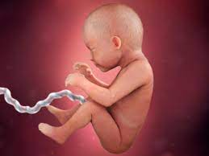

Now that you’re seven months pregnant, your little one is growing quickly and starting to look more and more like the baby you’ll soon meet. For example, she’s plumping up and her skin is becoming less transparent. Your belly is also growing, and you may face some physical challenges as a result. Try to keep in mind that every day that brings you back pain or tiredness also brings you one day closer to meeting your baby. Read on to find out what kinds of things may be in store this month from symptoms to baby development and more.
You’re entering the third trimester — the home stretch! Around this time, it’s common to feel the effects of your growing tummy and progressing pregnancy. Symptoms at seven months pregnant can include:
As your uterus grows, it can put pressure on the sciatic nerve, which can then cause hip or lower back pain. If the pain starts in your lower back or hip and travels down one leg, it could be sciatica, but only your healthcare provider can make a diagnosis. A hot or cold pack can help relieve the pain, and your provider can recommend stretches. If, at any time, you notice numbness in your legs or feet, let your provider know right away. Sciatica is likely to go away after your baby is born.
Pregnancy hormones do strange and unexpected things to your body. For example, they help loosen the joints that connect the two sides of your pelvis in preparation for labor and delivery. This can cause pelvic pain. If this strikes, try to stay off your feet as much as possible. Your healthcare provider can also give you stretches to do that may help ease your discomfort.
Higher levels of the hormone progesterone and iron (if it’s in your prenatal vitamins) can slow digestion, making you feel blocked up. To help alleviate constipation, keep yourself hydrated (water and prune juice are great) and make sure you’re getting enough fiber in your diet. Good sources of fiber include beans, whole grains, fruits, and veggies.
Sometimes called practice contractions, Braxton Hicks contractions can begin in the second or third trimester. They sometimes feel like a slight tightening in your abdomen, and they usually go away when you move or change positions. They’re more likely to occur later in the day, and after physical activity like exercising or sex. Read up on Braxton Hicks contractions and speak to your healthcare provider if you’re unsure whether you’re experiencing practice or real contractions.
Some moms-to-be experience a boost of energy during the second trimester, but as you begin the third trimester, you may start to feel a little more tired. One reason for this is that by seven months pregnant your belly has grown quite a bit, and it may be more difficult to get a restful night’s sleep. Try to rest when you can — even if that means taking some time out during the day — and sleep on your side using a pillow to support your growing bump. Maintaining a healthy diet and moderate exercise routine can also help you sleep better and keep your energy levels up.
Some light bleeding or spotting can happen around this time. Although it may not be anything serious, check with your healthcare provider, just in case. Bleeding can sometimes be a sign of a problem, so consulting your provider can give you peace of mind.
When you’re seven months pregnant, your baby is busy developing those organs and systems that will help her survive outside the womb. For example, her lungs are starting to produce a substance called surfactant, which allows her lungs to expand and contract properly. Other big news: your little one can now open and close his eyes! You’re probably eager to see those little peepers, and it won’t be long now! In the meantime, your baby may be able to sense changes in light and dark, and might respond to bright lights by moving or kicking. She’s also fattening up (becoming even more adorable), and this extra fat helps to smooth out the wrinkles in her skin. Her skin cells, meanwhile, are starting to produce melanin, which is a natural pigment that helps give skin its color.
So, what’s your baby’s approximate size when you’re seven months pregnant? Your baby could weigh about 2.5 pounds and measure 14 inches at this time.
Check out these illustrations for a glimpse at what your baby might look like when you’re seven months pregnant:
In your third trimester, you could gain as much as a pound a week.As your belly grows, and likely some time when you’re seven months pregnant, your healthcare provider will start to measure your fundal height. This is the distance between your pubic bone and the top of your uterus. This distance is measured in centimeters, and often corresponds closely to the week of your pregnancy. So, if you’re 28 weeks pregnant, it’s quite likely that your fundal height measurement will be something like 28 centimeters (11.02 inches), or very close to it. This measurement is just a tool to track your baby’s steady growth, and the measurements may not be exact for all moms-to-be.
At seven months pregnant, it’s generally accepted that you’re at the very beginning of the third trimester. It's a little trickier to determine how many weeks seven months pregnant is. The weeks of pregnancy don’t fit neatly into months, so seven months can begin between 25 weeks and 27 weeks pregnant and extend up to 28 to 31 weeks.